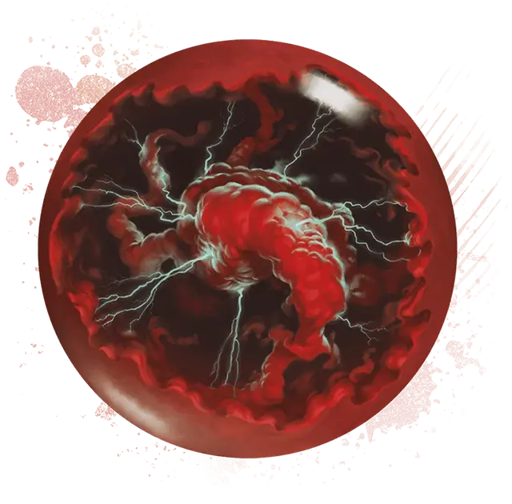

Хрустальный шар дурных знамений
Crystal Ball of Ominous Portent
Чудесный предмет, легендарный (требуется настройка)

Рекомендованная стоимость 200 000 ЗМ
Внутри этого хрустального шара клубятся кроваво-чёрные облака зловещей магии. Пока вы касаетесь шара, вы можете сотворять с его помощью Наблюдение или Сглаз (Сл спасброска 17).
Кроме того, когда видимое вами в пределах 60 футов существо преуспевает в Тесте к20, вы можете Реакцией превратить результат броска в «1». Как только вы использовали это свойство, вы не можете сделать это снова до следующего рассвета.